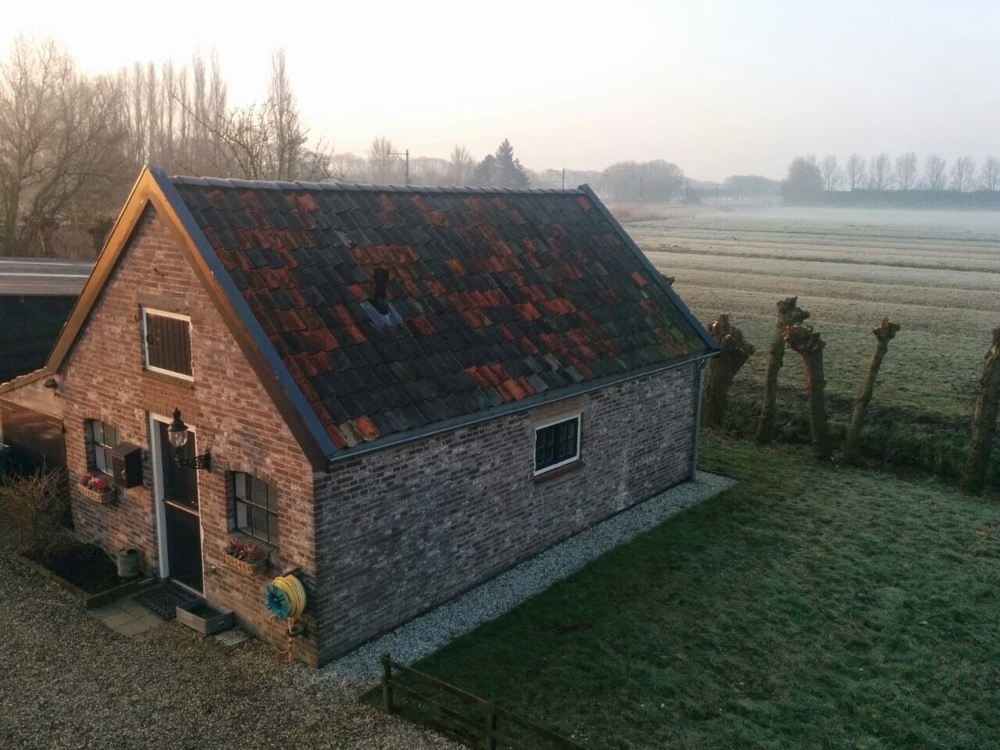
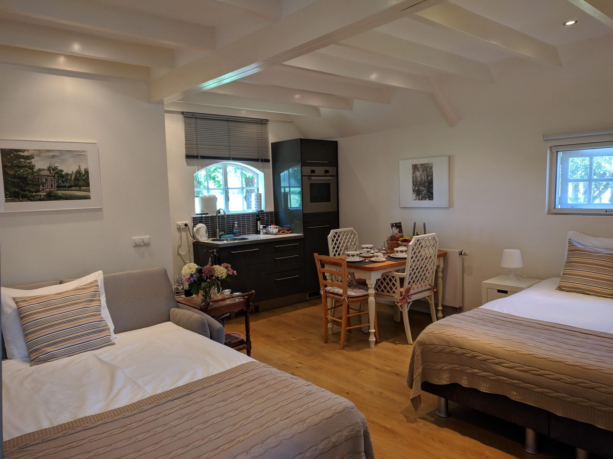
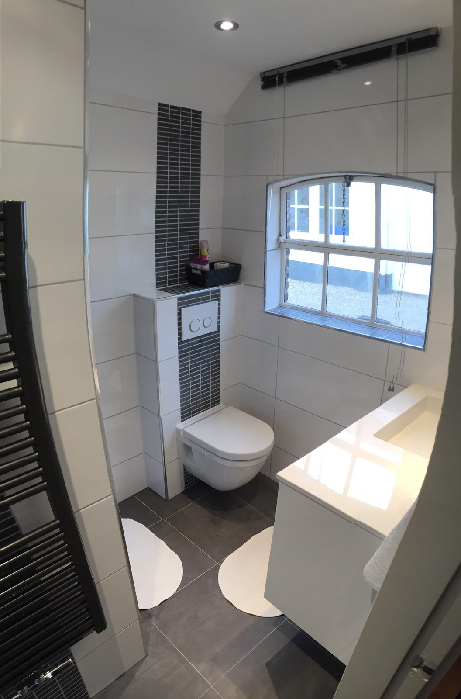
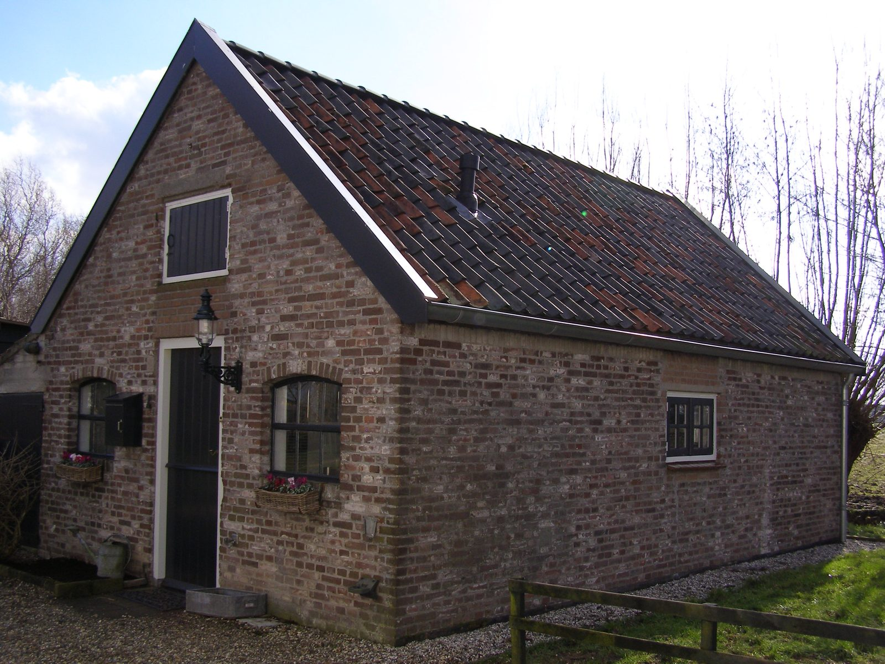
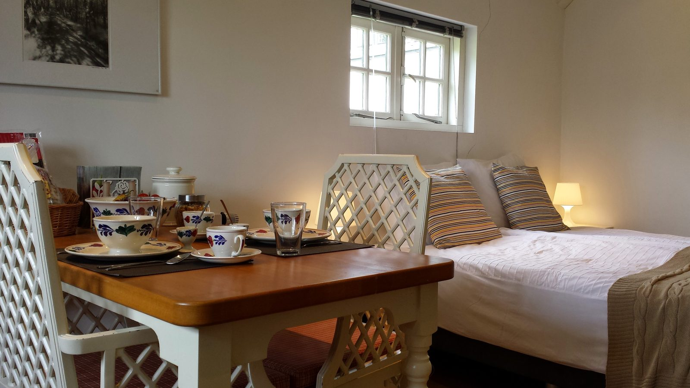
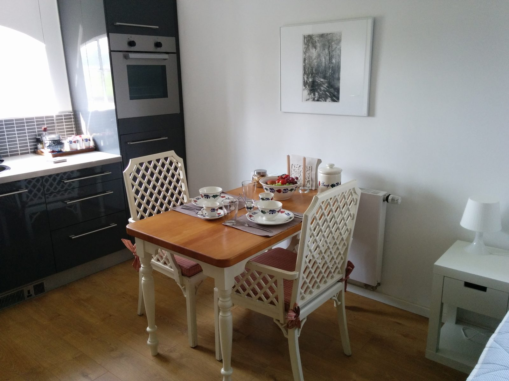
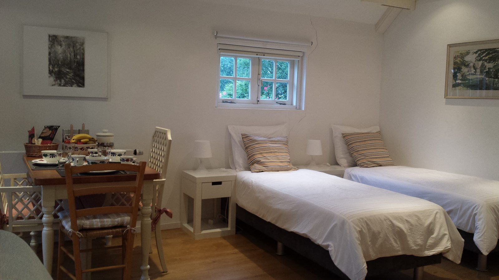
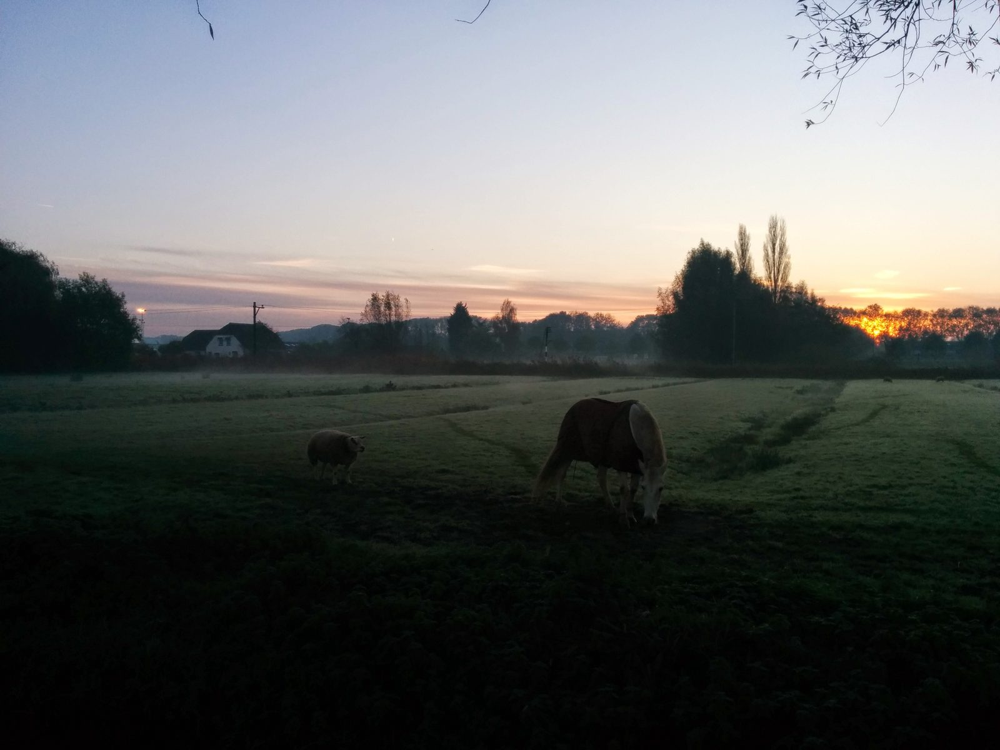
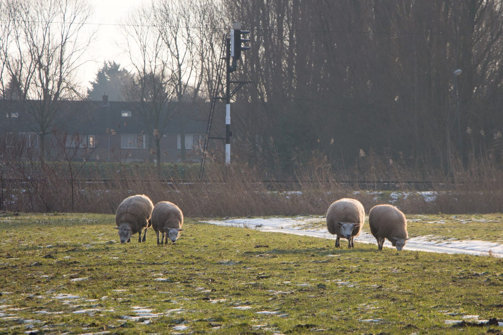
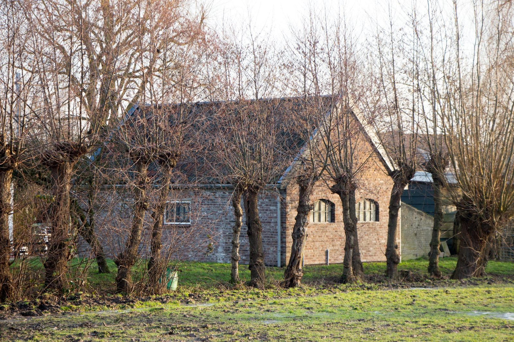

Een eigen studio in een oude stal, met de weilanden voor de deur
Rustig logeren in Arkel, net boven Gorinchem. Met een eigen badkamer, keukenblok en terras, en het ontbijt staat al klaar als u aankomt.
uit 216 gastenreviews



Het hele gebouwtje voor uzelf
In een apart pandje, oorspronkelijk een stal, hebben we een aangename studio gemaakt. U slaapt er met maximaal 4 personen en heeft alles voor uzelf: veel privacy en rust.
- Bed van 1.80 m of 2 losse bedden
- Privé badkamer met douche
- Keukenblok met ijskast en oven
- Eigen terras aan de weilanden
- Televisie en gratis wifi
- Parkeren binnen ons hek
Wat gasten zeggen
★★★★★"Een mooi en gezellig huisje met een leuk terrasje met mooi uitzicht. Goede service en een heerlijk ontbijt. Echt genoten van deze locatie, een aanrader!"
Neeltje Jacobareview op bbarkel.nl
★★★★★"We absolutely loved the accommodation. Amazing breakfast provided, including eggs from the chickens that live in the garden. Beautiful, quiet area with lovely cycling and walking from the doorstep."
Simonreview op bbarkel.nl
★★★★★"Wij hebben genoten! De plek is heerlijk. Rustig en toch alles "om de hoek". Hartelijk dank voor alles!"
Anne Clairereview op bbarkel.nl
★★★★★"The accommodation is magnificent with everything supplied and the breakfast was delicious. The private seating area at the back of the cottage was so quiet and serene you can't help but love this place."
Helenreview op bbarkel.nl



Het ontbijt staat klaar bij aankomst
Het ontbijt is bij de prijs inbegrepen. We serveren het niet, maar zetten alles voor u klaar in de studio. Zo ontbijt u wanneer het u uitkomt.
- Koffie en thee
- Afbakbroodjes
- Een vers broodje
- Crackers
- Yoghurt en cruesli
- Jus d'orange
- Verse eieren
- Vleeswaren
- Zoetigheid
- Vers fruit
In het keukenblok staan een ijskast, een oven en een 1-pits inductieplaatje. Een simpele maaltijd maakt u er gewoon zelf.
Fietsen en uitjes rondom Arkel
De regio is populair bij fietsers, maar ook voor niet-fietsers is er veel te doen. We voorzien u graag van informatie.
Slot Loevestein
Het slot bij Woudrichem ligt in de buurt en is goed bereikbaar.
In de buurtKinderdijk
De bekende molens van Kinderdijk liggen op kleine afstand.
Op kleine afstandGlasmuseum Leerdam
Het glasmuseum in Leerdam is dichtbij en goed bereikbaar.
DichtbijHistorisch Gorinchem
Het historische centrum van Gorinchem, net onder Arkel. Ook de Evenementenhal ligt om de hoek.
Net onder ArkelDe Biesbosch
Het natuurgebied van de Biesbosch ligt op kleine afstand.
Op kleine afstandDen Bosch, Breda, Utrecht en Rotterdam
Met een half uur rijden bent u er. Arkel ligt zeer centraal in Nederland.
Half uur rijden


Landelijk, en toch makkelijk bereikbaar
Achter de B&B kijkt u vanaf het terras zo de weilanden in. Toch bent u snel overal: het station van Arkel ligt op loopafstand, en in de trein tussen Geldermalsen en Dordrecht neemt u uw fiets gratis mee.
Reserveren
Bel, app of stuur ons uw datums. U hoort snel of de studio vrij is.
We horen graag van u
Voor een reservering of een vraag over de B&B.
De weg vinden: niet elk navigatiesysteem kent ons adres. Vanuit Gorinchem vindt u ons net vóór de spoorwegovergang aan de rechterkant, vanuit Arkel het eerste huis na het spoor links. Herkenbaar aan het grote groene hek.